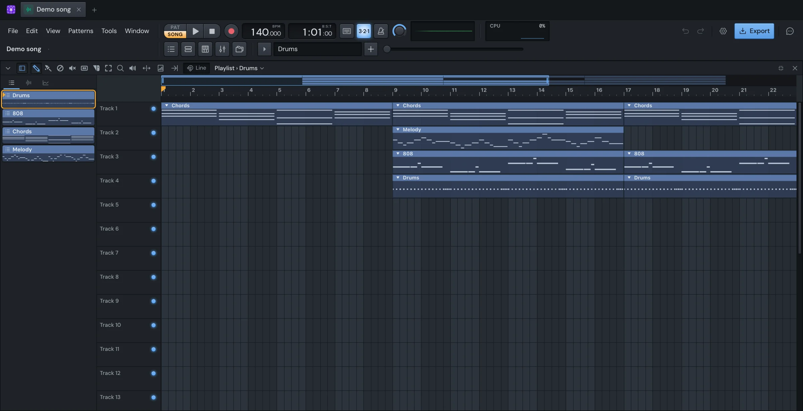

Make
Playlist
The Playlist is where a song is put together. It's a stack of numbered tracks, and on them go clips: pattern clips (the notes and steps of a pattern), audio clips (a sound file) and automation clips (a control's curve, see Automation). Any clip goes on any track. Press F5 to show or hide it.

Song mode and pattern mode
The PAT / SONG switch in the toolbar says what Space plays. PAT plays the pattern shown in the Channel rack, looped. SONG plays the Playlist. Press L to switch between them. A song that already has clips opens in song mode.
In song mode, play loops the whole song, up to the end of its last clip's bar. Make a time selection and it loops that instead.
Automation clips play in song mode only.
Put clips on the Playlist
The window's heading reads Playlist › name. That name is the clip source: what Draw and Paint add. Click the heading to pick another pattern, audio clip or automation clip from its menu.
- Pick what to add: from the heading's menu, or by clicking it in the Picker.
- Pick the Draw tool (P) and click an empty spot on a track. The clip goes at the start of the grid cell you clicked. Keep the button down and drag to move it before you let go.
- To lay several in a row, use the Paint tool (B) and drag along the track. Holding ⇧ with Draw paints too.
Left-click adds. Right-click deletes: right-click a clip, or hold the right button and sweep across several. Right-clicking where there's nothing deselects.
You can also drag straight onto a track:
- Drag a pattern, audio clip or automation clip from the Picker. You see it where it will land. Drag several at once and they land on tracks one under another. What you drop is selected, and the first one becomes the clip source.
- Drop sound files from the Browser or Finder. Each becomes an audio clip, one per track going down. Hold ⇧ as you drop to lay them one after another on a single track instead.
Hold ⌥ while you drag to place it off the grid.
Clicking a clip with Draw or Paint makes it the clip source, so the next one you add is the same.
Move, copy and resize clips
With Draw or Paint:
- Move: drag a clip. If it's part of the selection, the whole selection moves with it.
- Copy: ⇧-drag a clip.
- Resize: drag a clip's left or right edge.
- Change track only: hold ⌘ while you move, and the clips keep their place in time.
- Off the grid: hold ⌥.
Double-click a clip to open what it plays. A pattern clip opens the Piano roll on the channel with the most notes in it, or the Channel rack if the pattern only has steps. An audio clip opens its channel's settings. An automation clip opens its window.
The tools
The tool buttons are in the Playlist's toolbar. Each has a key, which works while the Playlist is the window in front.
| Tool | Key | What it does |
|---|---|---|
| Draw | P | Click to add a clip of the clip source. Drag clips to move them, their edges to resize. |
| Paint | B | As Draw, but dragging along a track lays clip after clip. |
| Delete | D | Click or sweep to delete clips. |
| Mute | T | Click or sweep to mute or unmute clips. Everything you sweep over ends up the same. |
| Slip | S | Drag to slide what's inside a clip while the clip stays put. |
| Slice | C | Drag down across clips to cut them. See Slice clips. |
| Select | E | Click a clip to select it, or drag a rectangle. ⇧ adds to the selection. |
| Zoom | Z | Drag a rectangle to zoom into it. Click to zoom out. Right-click to go back and forth. |
| Playback | Y | Press and hold to play the song from there. It stops when you let go. |
A few work with any tool:
- ⌘-click or ⌘-drag selects, as the Select tool does.
- ⌥-right-click plays the song from there.
- Double right-click switches to the Mute tool.
- ⌘-right-drag zooms into a rectangle. ⌘-right-click goes back.
Get around
- Scroll up and down the tracks with the wheel. Hold ⇧, or scroll sideways, to move along the song.
- Zoom with ⌘ and the wheel, or a pinch, around the pointer. Page Up and Page Down zoom around the middle.
- Make tracks taller or shorter with ⌘⌥ and the wheel, or ⌘ and a middle-button drag.
- Pan by dragging with the middle button, or by ⇧-right-dragging.
- The overview along the top shows the whole song. Drag it to scroll; drag its ends to zoom.
- The scrollbar on the right scrolls the tracks. Drag its ends to change the tracks' height.
Keys for jumping to a view:
| Key | View |
|---|---|
| ⇧1 | 4 bars across |
| ⇧2 | 16 bars across |
| ⇧3 | 64 bars across |
| ⇧4 | The whole song |
| ⇧5 | The time selection |
| ⇧0 | Centre on the playhead |
| Home | Back to the song's start |
The playhead turns red while you record.
Follow playhead
The Playlist stays where you put it while the song plays: it doesn't move by itself, so you can work on one part while another plays. To have it go along with the song, turn on Follow playhead, the arrow button in the Playlist's toolbar. Yen Studio remembers it.
With it on, while the song plays:
- The view goes to the playhead when you turn it on or start playing, if the playhead isn't in view.
- As the playhead reaches the middle of the view, the view scrolls smoothly with it, keeping it in the middle.
- When play goes round the loop back to its start, the view goes there at once.
- If you scroll away from the playhead, the view stays where you scrolled until the playhead comes back into it, or goes round the loop.
- It doesn't scroll while you drag something.
Snap
The magnet in the toolbar sets what clips snap to. Line and Cell follow the grid you see, which gets finer as you zoom in. The others are fixed: from a sixth of a step up to a whole bar, or (none). Hold ⌥ while you drag to ignore the snap for that drag.
Select and edit
Most commands act on the selected clips. With nothing selected, they act on every clip.
| Key | What it does |
|---|---|
| ⌘A | Select all |
| ⌘D | Deselect (the clips and the time selection) |
| ⇧I | Invert the selection |
| ⇧C | Select every clip like the selected ones |
| ⌘C / ⌘X / ⌘V | Copy, cut, paste |
| ⌘B | Duplicate, to the right |
| ⌫ | Delete |
| ⌥M / ⌥⇧M | Mute / unmute |
| ⌃Q | Quick quantize: start times onto the snap |
| ⇧← / ⇧→ | Nudge by the snap |
| ⇧↑ / ⇧↓ | Move a track up or down |
| ⌘⌥C | Consolidate |
Paste puts the clips at the first bar in view, on the tracks they came from, and selects them. Duplicate puts the copy straight after, selects it, and moves the time selection along with it, so pressing ⌘B again carries on.
The Edit menu (the arrow at the start of the toolbar) has the same commands, for when you'd rather click.
Select a stretch of time
The ruler along the top is where play starts from. Click or drag in it to set that. If the song is playing, it jumps there straight away.
To select a stretch of time, ⌘-drag in the ruler, or double-click and drag. A time selection:
- loops in song mode,
- selects the clips in it,
- sets where a new automation clip goes.
Double-click the ruler without dragging, or right-click it, to clear it.
With a time selection:
| Key | What it does |
|---|---|
| ⌘← / ⌘→ | Move it by its own length |
| ⌘Enter | Make one around the selected clips |
| ⌘Insert | Insert space: push everything from its start along by its length |
| ⌘⌥Insert | Insert space, cutting clips that cross its start |
| ⌘⌫ | Delete space: take that time out and close the gap |
Inserting and deleting space moves the time markers too.
Time markers
Press ⌥T to add a marker. It goes where the song is: where you hear it while it plays in song mode, or where play starts from when it doesn't. It's named "Marker 1", "Marker 2" and so on, and you can type a new name straight away on the ruler.
Markers sit along the bottom of the ruler.
- Click one to play from it.
- Drag it to move it.
- Double-click it to rename it. Enter keeps the name, Esc doesn't.
- Right-click it to rename, delete, or turn it into a Start recording or Stop recording marker. With those, a recording keeps only what's between them. See Recording.
Slice clips
- With the Slice tool (C): drag down across the clips. The cut goes straight down at the nearest grid line, across the tracks you drag over. Hold ⇧ to cut every track, top to bottom; you see the line before you click. Hold ⌥ to cut off the grid.
- With a key: point at a clip and press Insert. It's cut at the nearest grid line.
- Into even pieces: a clip's menu has Chop: every bar, every beat, every step, or at the snap. The pieces are selected.
Every piece is still a clip of the same pattern or sound. Use the Slip tool to change which part each one plays.
Track headers
Each track has a header on the left with its name and a mute light.
- Mute: click the light, or the header around the name. Solo: right-click the light, or ⌘-click it. ⌘- or ⌥-click on the header solos too.
- Rename: double-click the name.
- Height: drag the line under the track. ⌥-click the line to reset it.
Right-click the name for the track's menu: rename and colour, size (50% to 300%), select its clips, mute or unmute all its clips, solo, insert a track, move it up or down, or delete it (with its clips). Consolidate this track renders its clips into audio on the same track.
Audio track makes the track record from a mixer track's input. It then shows an arm button and, when it's tall enough, which mixer track and input it uses: click that to open the Mixer on it. See Recording.
The Picker
Press ⌥P to show or hide the Picker panel, on the Playlist's left. Its tabs list the song's Patterns, Audio clips and Automation clips, each with a little picture of what it plays.
- Click one to make it the clip source. Clicking a pattern also shows it in the Channel rack.
- Drag one onto a track to place it.
- ⌘-click to select several, ⇧-click for a range.
- Double-click a pattern to show it in the Channel rack, an audio clip to select its channel, an automation clip to open its window.
- ⌥↑ and ⌥↓ move the selected patterns up and down the list.
Right-click a pattern for: transpose, rename, clone, split by channel, move up or down, and delete. Right-click an audio clip or an automation clip to open its settings or delete it.
Deleting something in the Picker deletes its clips from the Playlist too. Delete every pattern and you're left with an empty Pattern 1.
The clip menu
Every clip has a small arrow at the start of its title. Click it, with any tool, for the clip's menu.
- Preview: hold it to hear the clip on its own.
- Edit pattern, Channel settings or Automation settings: open what the clip plays.
- Rename and color… and Change color: for what it plays, so every clip of it changes. A clip takes the colour of what it plays, or else its track's.
- Make unique: see below.
- Split by channel (a pattern clip): see below.
- Chop: cut it into even pieces.
- Consolidate, Render as audio clip, and on a rendered clip Re-render and Unconsolidate: see Consolidate.
- Select all similar clips, Mute or Unmute, Delete.
An audio clip's menu also has Stretch, Detect tempo, Automate (volume or panning, see Automation), Reset fades and gain, and Extract stems… and Convert to notes….
An automation clip's menu has Tools, the same as in its window.
Make unique
Every clip of a pattern plays that same pattern: change the notes and every copy changes. When you want one to be different, use Make unique from its clip menu. That clip gets its own copy of the pattern, named "Pattern 1 #2" and so on, and the others are left alone.
It works the same for an automation clip: it gets its own copy of the curve.
For an audio clip it's Make unique as sample: the clip gets a channel of its own, playing the same file. Then its channel's settings (pitch, volume, stretch) are its own.
Split by channel
A pattern can play several channels at once: a whole drum kit, say. Split by channel turns it into one pattern per channel, and its clips on the Playlist are split the same way, each on a track. It's one step of undo.
It's in a pattern clip's menu, in the Playlist heading's menu when the clip source is a pattern, and in the Picker.
Audio clips
Fades and gain
An audio clip has small handles on its body:
- Fades: drag the corner at the top left along the clip for a fade-in, the top right for a fade-out.
- Fade curves: once a fade is long enough, drag the middle of its curve up or down to bend it.
- Gain: drag the half-circle in the middle of the clip's bottom edge up or down. It goes up to +36 dB; drag it far enough down and the clip is silent.
If several clips are selected, they all change alike. Reset fades and gain in the clip menu takes them back.
Stretch
By default, a clip's edge resizes it. Turn on Stretch in the toolbar (⇧M) and dragging an audio clip's edge stretches its sound to fit instead.
The clip menu's Stretch has more:
- Mode: Stretch keeps the pitch. Resample plays it faster and higher, or slower and lower, as a record would.
- Reset pitch, keep speed: back to the pitch it was recorded at, at the speed it plays now.
- Time: None (the file at its own speed), Autodetect, Project tempo (it sounds as it does now, then follows the song's tempo), a length in beats or bars, Twice as long or Half as long.
- Follow its channel's: once a clip has a stretch of its own, this gives it back the channel's.
If selected clips include the one you clicked, the selection changes with it.
A stretched clip follows the song's tempo: change the tempo and it keeps time. A channel's pitch makes its audio clips higher or lower, never faster.
Detect tempo
Detect tempo in an audio clip's menu listens to its file, works out its tempo, and stretches it to the song's. You see the tempo it heard. A file that's too short to tell is left as it was.
Consolidate clips into audio
Consolidating renders clips into audio clips that sound the same.
- Select the clips. With nothing selected, ⌘⌥C asks you to select some first.
- Press ⌘⌥C, or pick Consolidate from a clip's menu.
You get one audio clip per mixer track the clips play into, in their place. The clips you rendered go inside it, so nothing is lost. The sound is as it reaches its mixer track, before that track's effects: the instrument and the channel's volume and pan are in it; the track's effects, fader, pan and sends aren't, and still apply when it plays back into the same track.
On a consolidated clip:
- Re-render renders the clips inside it again, as their patterns and instruments are now. Its copies and slices all play the new sound.
- Unconsolidate puts back the clips it was made from, wherever the clip has moved to. If you trimmed it, you get only the part inside.
Render as audio clip is the same render, but it leaves your clips as they are and puts the audio on the first free tracks below. The new clip starts where the first clip does.
Consolidate this track, in a track's menu, does it for every clip on that track.
Keys at a glance
These work while the Playlist is the window in front. ⌘ is Ctrl on Windows. See Shortcuts for the rest of the app.
| Key | What it does |
|---|---|
| P B D T S C E Z Y | Draw, Paint, Delete, Mute, Slip, Slice, Select, Zoom, Playback |
| ⌥P | Picker panel |
| ⇧M | Stretch on or off |
| ⌥T | Add a time marker |
| Insert | Slice the clip under the pointer |
| ⌃Q or ⇧Q | Quick quantize |
| Esc | Close the Playlist |
Something here wrong or missing? Tell us.